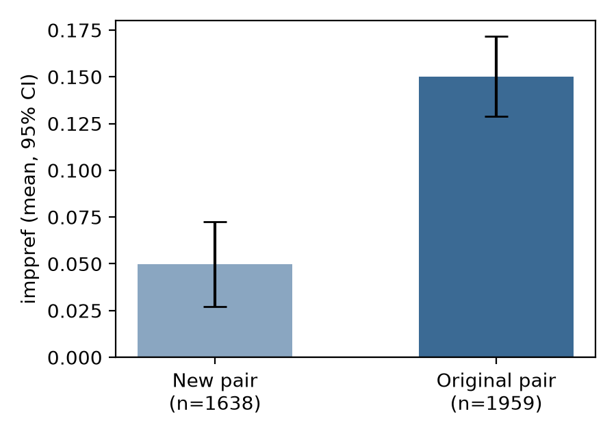

Question. Right after learning about one mostly-positive and one mostly-negative individual from two fictional groups, is the response-speed (sorting-task) preference people show between two new members of those groups as large as the preference others show between the two original individuals? The claim predicts no difference between new-pair and original-pair raters.
Data and sample. Replication data d07.csv, 4,267 rows. Exclusions, applied in the stated order: missing self-reported preference, 322; missing sorting-task score, 285; more than 10% of trials under 300 ms, 1; not exactly 200 scored trials, 62. N = 3,597 remain: 1,638 rated the new pair and 1,959 rated the original pair. No further rows had a missing condition or outcome.
Test (fixed before analysis). Two-sided Welch two-sample t-test of imppref, new-pair group vs original-pair group. Cohen's d uses the pooled SD. Before running it I set the decision rule: the claim holds only if the test is non-significant and the 95% CI of d lies inside ±0.2. It fails if p < .05.
Result.
| Group | n | mean imppref | SD | vs 0 |
|---|---|---|---|---|
| New pair | 1,638 | 0.050 | 0.470 | t = 4.29, p < .001 |
| Original pair | 1,959 | 0.150 | 0.481 | t = 13.81, p < .001 |
Welch t(3511.1) = −6.31, p = 3.2 × 10⁻¹⁰. Mean difference (new − original) = −0.100, 95% CI [−0.132, −0.069]. Cohen's d = −0.21, 95% CI [−0.28, −0.15]. The preference for the new pair is about one third of the preference for the original pair. An equivalence test at ±0.2 d fails (TOST p = .63).

Checks. The Student t-test gives t(3595) = −6.30, p < .001, and the Mann–Whitney test gives p < .001. Both agree with the primary test. The new-pair preference is above zero, so some transfer does occur, but less than the full amount. On the companion self-report measure the gap is much larger: means 0.19 vs 1.09, Welch t = −22.8, p < .001.
The two groups are not balanced. The raw data have 2,208 original-pair and 1,946 new-pair rows, and the exclusions removed more new-pair raters (15.8% vs 11.3%). After exclusions the split differs from 50/50 (binomial p < .001). I cannot check from these data whether this affects the result. The difference is large and stable across tests, so the imbalance seems unlikely to reverse it.
Conclusion. The claim does not hold on this data: immediately after learning, the response-speed preference for the new group members is reliably smaller than the preference for the original individuals (d = −0.21), not equal to it.